新版 Hard-PDF 已从 3 个初始 LHS 点（seed=101）重新独立执行 100 次 USLW 查询，并用全部 103 个观测完成最终重训。以下 PDF 误差和云图均采用它的两个单独成员；普通 E-NN（λ=0）沿用已完成的基线，展示两成员平均预测。旧工程和旧结果没有修改。
两种模型的 MLP 均为 2→200→200→200→200→200→1、5 个 ReLU 隐藏层，每成员 161601 个参数，包含相同偏置、单精度和初始化规则。Hard-PDF 另有不含可训练参数的 32×32 三角网格及解析 CDF/参考分位数变换；此变换采用双精度。最终部署的 Hard-PDF 函数因此仍不同于直接 MLP。
仍存在的训练差别：Hard-PDF 使用 Adam 最多 1800 步、学习率 0.002，随后 LBFGS 最多 450 步，以训练 MSE 选择有效参数；达到归一化 RMSE 10⁻⁴ 时提前结束。普通模型使用 Adam 1000 步、学习率 0.001、最后一步参数。因而本次统一了网络配置，仍不是完全相同优化器预算的消融实验。
每轮冷启动，NN1、NN2 是成员槽位，第 k 轮初始化种子为 2k+1、2k+2；第 k 轮训练点数为 3+k。USLW 继续使用成员均值和方差选择 1000 个高斯候选点中的最大值；两个单成员的 PDF 约束不意味着用于选点的均值也受同样约束。
| 指标 | Hard-PDF NN1 | Hard-PDF NN2 | 普通 E-NN 均值 |
|---|---|---|---|
| pdf_e | 0.005709929 | 0.006327126 | 0.01717451 |
| rmse | 0.005003537 | 0.006230346 | 0.01091991 |
| top1_rmse | 0.01055213 | 0.01098909 | 0.00297845 |
| train_mse | 1.409745e-07 | 9.83043e-09 | 1.178259e-08 |
本次新版 Hard-PDF 的两个成员在总体 RMSE 和 PDF 误差上均优于普通 E-NN 均值，但最高 1% 区域误差仍较大。第 80—100 轮总体 RMSE 中位数分别为 0.005561、0.005993，普通模型为 0.012084；相应最高 1% 区域 RMSE 中位数为 0.011235、0.011198 和 0.006635。因此，整体预测改善不等于最极端区域也最优。
曲线显示新版约在第 50—60 轮出现明显改善。第 100 轮两个成员的最高峰网格位置均为 [1.8399999999999999, -2.08]，真实最高峰为 [2.0, -2.0]；普通模型最终网格最高峰位于真实峰位置。Hard-PDF 仍使用 32×32 分片网格，单纯增加 MLP 层数与宽度并没有增加该空间表示的分辨率。这个残余峰位偏差与极端区误差同时存在，需进一步做网格分辨率实验才能判断其因果贡献。
两个 Hard-PDF 成员的最终全域分歧 RMS 为 0.003748，已较小，但相似预测也可能共享局部偏差。PDF 误差仍是对数密度估计误差；每成员满足数值参考边缘分布，不代表这项有限样本估计误差为零，也不保证峰的位置正确。本次是一个初始设计和种子序列的实验，且优化预算仍不同，不能据此断言所有问题上硬约束都更好。
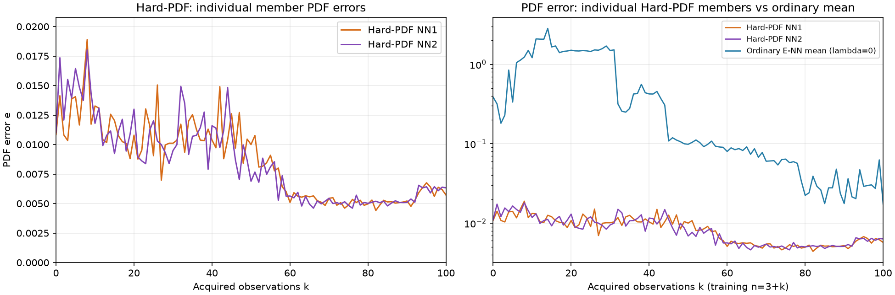
左图用线性纵轴展示两个成员的小误差；右图用对数纵轴与普通模型均值对比。误差口径与此前一致：同一测试集、固定带宽、log₁₀ 密度差积分及 10⁻¹⁶ 密度下限。数值参考分布与有限样本 PDF 估计使成员误差不严格为零。
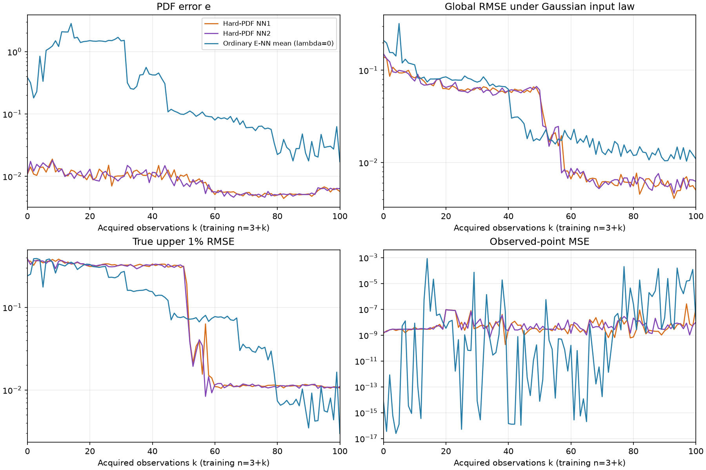
从左到右：真实值｜Hard-PDF NN1｜Hard-PDF NN2｜普通 E-NN 均值。全部图共用色标 [-0.061644, 0.935708]，保留负值与超出真实峰值的预测。标题 RMSE 按高斯输入分布的独立测试集计算。
1, 2, 3, 4, 5, 6 轮总览 · 7, 8, 9, 10, 20, 30 轮总览 · 40, 50, 60, 70, 80, 90 轮总览 · 100 轮总览
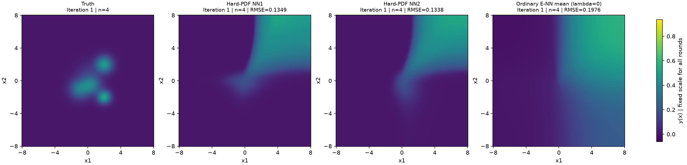
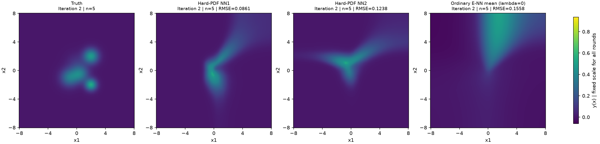
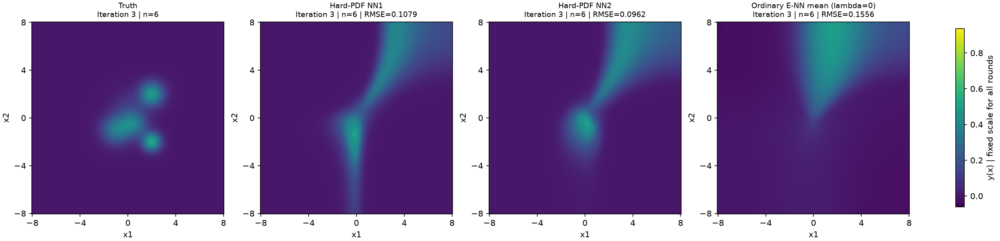
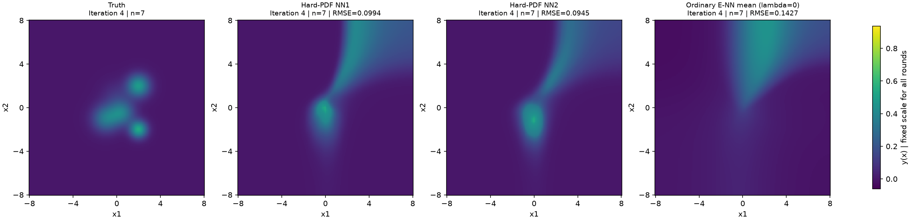
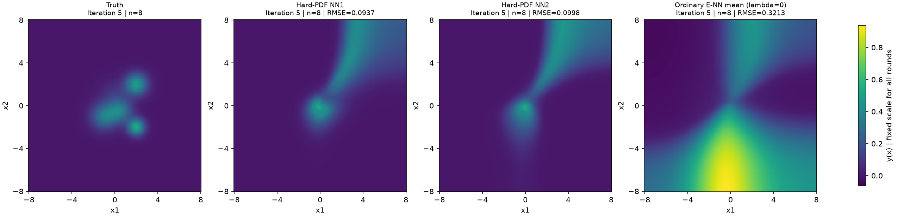
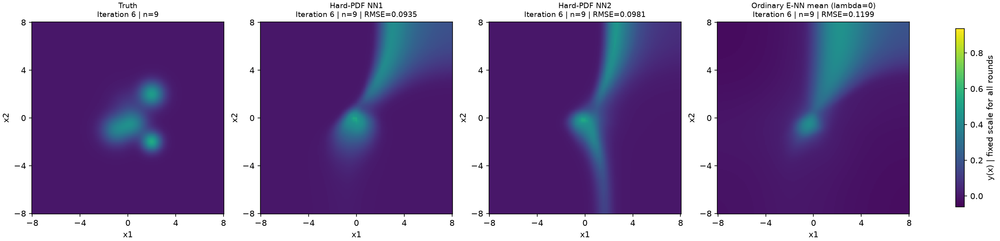
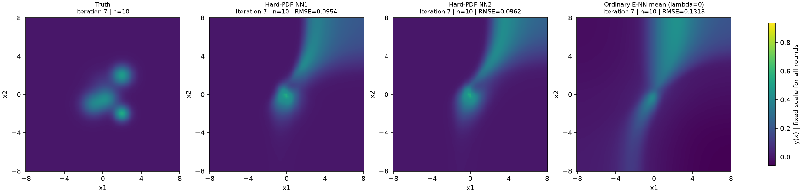
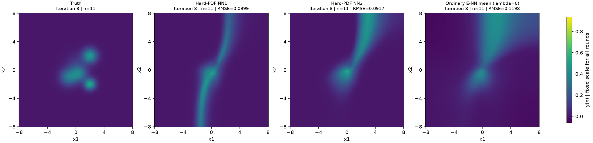
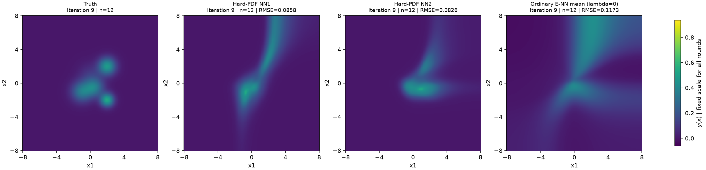
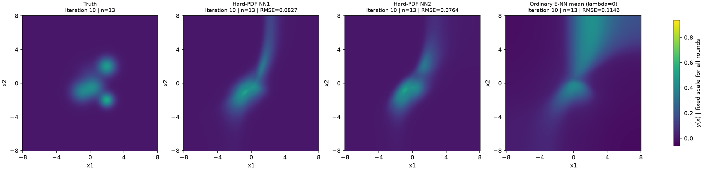
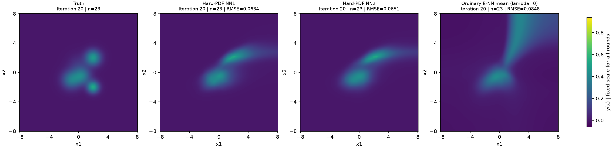
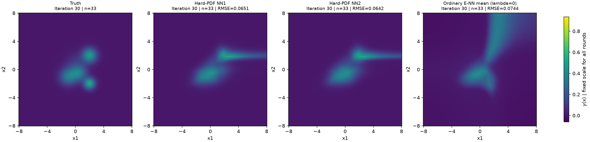
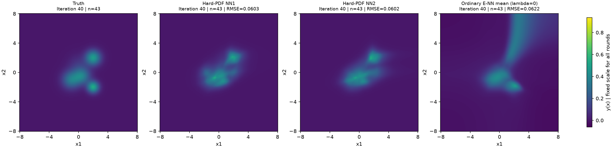
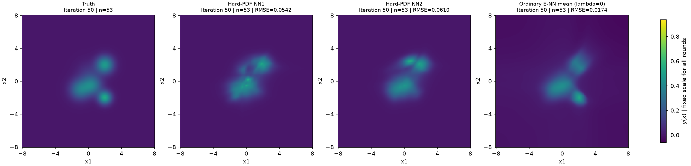
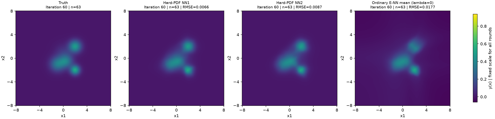
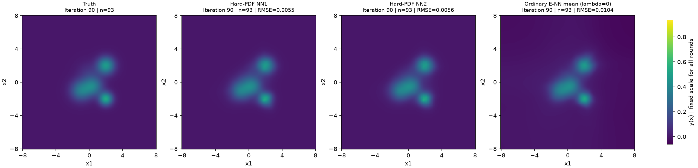